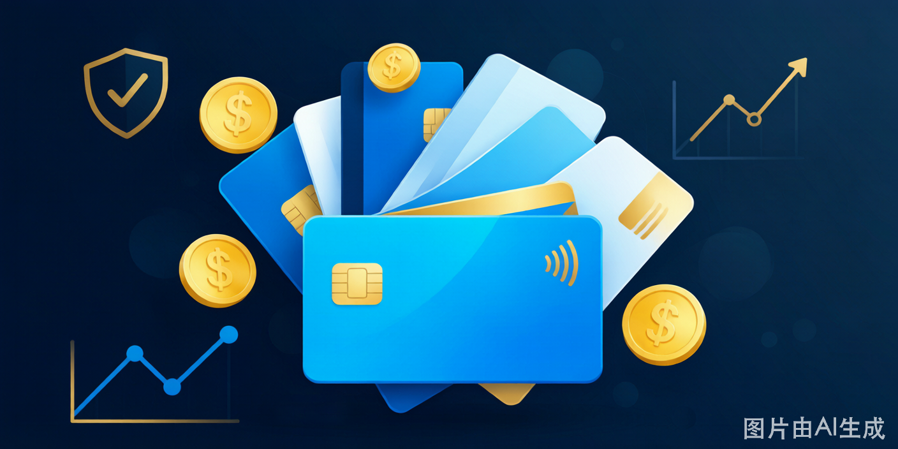
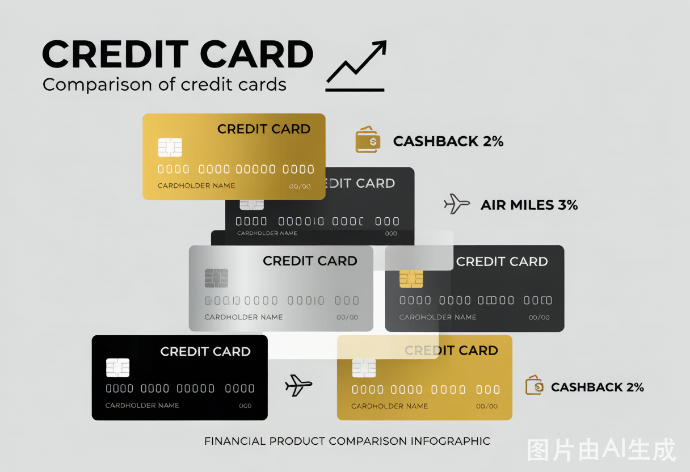
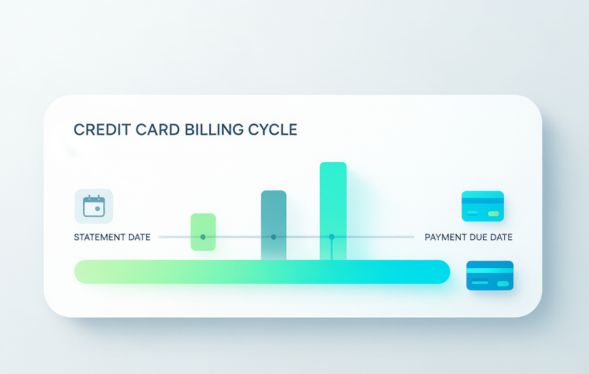

信用卡理财：免息期怎么用到极致？50天免息+积分变现的实战攻略
信用卡不只是消费工具——善用免息期可以免费占用银行资金50天，积分+优惠年化回报可达3%-5%。学会聪明的用卡方法，附5张神卡真实收益对比。
**摘要：** 很多人把信用卡当"透支工具"——这个月花下个月还，利滚利越陷越深。但同一张信用卡用得好，每年能为家庭多赚3000-5000元的"隐性收入"。关键不在卡，在于**用卡方法和纪律**。本文用真实数据告诉你信用卡的正确打开方式。

一、信用卡免息期的正确打开方式：50天白用银行的钱
信用卡最核心的理财价值，就是**免息期**——在你刷卡消费之后、还款日之前，银行不收你一分钱利息。这段时间，你花的是银行的钱，你自己的钱可以放在别处吃利息。
免息期是怎么算出来的？
信用卡账单周期通常为30天，加上账单日后约20天的还款宽限期——**最长免息期可达50天**。
以下是一个具体例子：
| 时间节点 | 事件 | 说明 |
|---|---|---|
| 每月5日 | 账单日 | 银行结算上一个月的消费 |
| 每月25日 | 还款日 | 账单日后20天，必须还清 |
| 6日消费 | 入下一账单 | 这笔钱要等到下个月5日才出账 + 20天宽限 |
如果你在**每月6日**（账单日后第一天）刷了一笔大额消费，比如10,000元：
- 这笔消费记入**下个月**的账单（而非当月）
- 下个月5日出账单，最晚25日还款
- 从刷卡到还款，中间隔了**整整50天**
这50天里，你把10,000元放在货币基金（年化约1.8%），能赚：
10,000 × 1.8% ÷ 365 × 50 ≈ **24.6元**
看起来不多？但如果你每月都用这种方法处理家庭大额开支——每月刷卡2万元，一年下来：
20,000 × 12 × 1.8% × (50÷365) ≈ **591元**
每年白捡近600元，相当于银行送你一张免费电影票，每个月看一场。
进阶技巧：多卡错开账单日
更聪明的玩法是**办2-3张信用卡，每条账单日错开**：
- 卡A：账单日5日 → 6-4日刷卡享受长免息
- 卡B：账单日15日 → 16-14日刷卡享受长免息
- 卡C：账单日25日 → 26-24日刷卡享受长免息
这样一来，无论哪一天有大额消费，你总有一张卡处于"刚过账单日"状态，最大化免息天数。这个技巧的价值在于——**你永远在用银行的钱消费，自己的钱一直在生息**。
二、真实案例：信用卡高手的年赚5000元账单
以下是一个完全真实的案例（数据已脱敏）：
**背景：** 张先生，32岁，北京某互联网公司产品经理，月薪2.5万元。家庭月消费约1.8万元（含房贷、车贷、日常开支等）。
**用卡策略：**
| 消费场景 | 使用卡片 | 策略 | 年收益 |
|---|---|---|---|
| 日常餐饮/超市 | 交行沃尔玛卡 | 周五返现5%，年返约2,400元 | +2,400元 |
| 加油/高速费 | 平安车主卡 | 加油88折，年省约1,200元 | +1,200元 |
| 网购（京东/淘宝） | 中信i白金 | 积分+满减，年省约600元 | +600元 |
| 出差机票/酒店 | 浦发AE白 | 里程兑换，年约省1,500元 | +1,500元 |
| 所有消费免息期理财 | 余额宝 | 平均占用资金2万元×1.8% | +360元 |
**年度合计：约6,060元**（不含各类优惠券和权益）
张先生的秘诀：**每张卡只用于它最擅长的场景**。不是"一张卡走天下"，而是"每张卡有明确分工"。
三、信用卡积分的真实价值：别再看"1积分=1分钱"的误区

信用卡积分的实际价值差异巨大。很多人以为"1万积分=100元"，这是被银行话术误导了。
| 兑换方式 | 每万积分等价价值 | 年化回报率（年消费10万） | 推荐度 |
|---|---|---|---|
| 航空里程 | ¥400-800 | 4%-8% | ⭐⭐⭐⭐⭐ |
| 高端酒店积分 | ¥300-500 | 3%-5% | ⭐⭐⭐⭐ |
| 电子券/加油卡 | ¥150-250 | 1.5%-2.5% | ⭐⭐⭐ |
| 实物礼品 | ¥50-100 | 0.5%-1% | ⭐ |
| 直接抵扣账单 | ¥100-150 | 1%-1.5% | ⭐⭐ |
**兑换航空里程是积分价值的"天花板"**。以招商银行经典白金卡为例，1,500积分可兑换2,000航空里程（国航/东航/南航通用），2,000里程价值约80-120元——换算每万积分价值约533-800元。
关键前提：你要选定一家航空公司**集中积累**里程，不要东换一点西换一点。里程有效期通常3年，攒够了兑换一趟免费机票，才是真正的"值回年费"。
**避坑提醒：** 积分有有效期（多数银行2-3年），过期自动清零。建议每半年集中兑换一次，养成习惯。
四、信用卡的5个正确习惯 vs 5个致命错误
✅ 5个正确用卡习惯
| 习惯 | 操作方法 | 收益/避免损失 |
|---|---|---|
| 1. 设置自动还款 | 绑定借记卡，到期自动扣款 | 避免逾期（逾期一次，征信黑5年） |
| 2. 账单日后大额消费 | 每月账单日次日刷大额 | 享受最长免息期（约50天） |
| 3. 只刷必需品 | 不因优惠而多消费 | 不刷不必要的东西=变相省钱 |
| 4. 每半年查一次征信 | 央行征信中心官网免费查询 | 及时发现异常开卡/盗刷记录 |
| 5. 注销不用的卡 | 睡眠卡可能产生年费 | 每年省几百元年费，征信简洁 |
❌ 5个致命用卡错误
| 错误 | 后果 | 实际年化成本 |
|---|---|---|
| 1. 只还最低还款额 | 剩余金额按日息万分之五计息 | **年化约18.25%** |
| 2. 信用卡取现 | 手续费1%+日息万分之五 | 年化约20%起 |
| 3. 以卡养卡 | 多卡互相套现，雪球滚大 | 极易崩盘，负债失控 |
| 4. 为办卡礼而办卡 | 征信查询记录过多 | 影响贷款审批 |
| 5. 用信用卡投资 | 借钱炒股票/基金/加密货币 | **血本无归概率极高** |
**最危险的错误是"以卡养卡"。** 李女士的真实教训：2023年因装修超支，用3张信用卡互相倒账，2年内从负债6万滚到24万，最终靠家人帮忙才脱身。信用卡不是印钞机，它是**有成本的短期融资工具**。
五、2025年最值得办的5张信用卡——按真实收益排名

以下排名基于**年消费6-8万元的中产家庭**，不含高端卡（年费3000+的产品）：
| 排名 | 卡片名称 | 年费 | 核心权益 | 年化收益（约） | 最适合人群 |
|---|---|---|---|---|---|
| 🥇 1 | **招行Young卡** | 首年免，刷6次免次年 | 积分通用性强，周三5折美食 | ¥400-600 | 年轻人入门首选 |
| 🥈 2 | **交行沃尔玛卡** | 免年费 | 周五超市/加油返现5% | ¥800-1,200 | 家庭日常消费多 |
| 🥉 3 | **平安车主卡** | ¥200（可免） | 加油88折，最高月返60元 | ¥600-800 | 有车一族 |
| 4 | **中信i白金** | ¥480（可免） | 网购双倍积分，延误险 | ¥400-600 | 网购/出差多 |
| 5 | **浦发AE白** | ¥3,600 | 里程兑换最优比例，机场贵宾厅 | ¥2,000-3,000 | 年消费20万+的商务人士 |
**选卡原则：** 不看卡面有多好看，看**你的消费结构**是否匹配卡片权益。家里吃得多→超市返现卡；出行多→里程卡；网购多→网购积分享。一张不适合的顶级卡，可能年费都赚不回来。
六、容易被忽略的用卡细节
细节一：退款不算还款
如果你在账单日后退货退款，这笔退款**不计入本期还款**——你仍然需要还清账单金额，退款会出现在下一期账单中。很多人因此"被逾期"。
细节二：临时额度≠你的钱
银行给你提临时额度（比如从5万提到8万），看似多了3万可用——但临时额度部分**必须一次性还清**，不能分期、不能最低还款。
细节三：外币消费有隐藏费用
在境外刷卡或海淘，信用卡会收取**1.5%的货币转换费**。如果你经常境外消费，办一张免货币转换费的全币种卡（如招行全币种卡），每次能省1.5%。
常见问题 FAQ
**Q：信用卡多了会影响征信吗？**
A：持卡数量本身不影响征信，但**频繁申请新卡**会产生信用查询记录（硬查询）。银行看到你短期内申请多张信用卡，会认为你"资金紧张"，可能影响房贷/车贷审批。建议每年新办卡不超过2张，征信查询间隔至少3个月。持卡总数控制在3-5张为宜，多了管理不过来反而容易逾期。
**Q：信用卡积分怎么查？什么时候兑换最值？**
A：各银行APP的"积分商城"可查。建议每年**6月和12月**统一兑换——这两波通常是银行积分活动最密集的时候，兑换比例更高（如里程加赠20%）。不要拖到积分快过期再兑，临期兑换只能换些低价值礼品。
**Q：忘记还款逾期1-3天怎么办？**
A：首先立刻全额还款。然后致电银行客服说明"非恶意逾期"——大部分银行有**1-3天的宽限期**，逾期3天内还清一般不上报征信。即使上报了，首次非恶意逾期可通过银行申请撤销征信记录（需要提供非恶意证明）。关键在于**主动联系，不要装死**。
**Q：信用卡年费能免吗？怎么谈？**
A：普卡/金卡通常刷满6次免年费。白金卡及以上可以打电话给客服"谈心"——说"我正在考虑要不要继续用这张卡"，客服通常会给出减免方案（如用积分抵扣、消费达标减免）。如果谈不下来，可以考虑降级成免年费的普卡（保留账户，降低年费负担）。
*本文数据来源于各银行2025年信用卡权益公开信息及作者实测。积分兑换比例以实际兑换页面为准，航空公司里程价值随市场波动。*
*理性消费，按时还款。信用卡是工具，不是印钞机。*